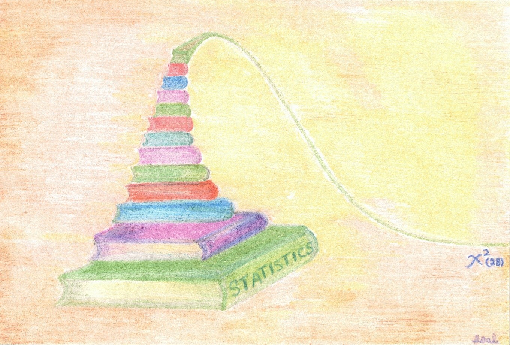

Data Analysis Activities
2024-11-30
Welcome to Data Analysis Activities

This book contains a variety of statistical activities using real-life data sets. It is intended for developing statistical reasoning at an introductory to an intermediate level by explaining patterns in the data, interpreting and communicating results within the context of data, and making data-based arguments and inference. Each chapter corresponds to one statistical activity with a set of learning objectives.
Click on a link below to access a specific statistical activity.
Note: Solution to each statistical activity is shared at the instructor’s discretion.